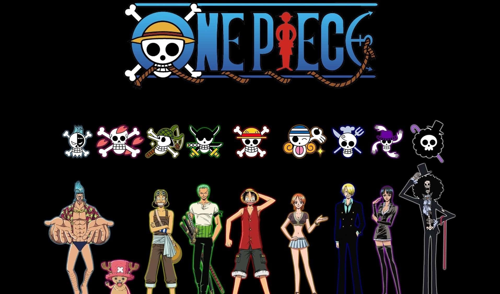

Lenguaje de Marcas - Ejercicio práctico HTML
Fecha: 27 de noviembre de 2025
Hola. Soy Alejandro García Carmona de
1ºDAM en la asignatura de Lenguaje de Marcas
En este ejercicio voy a listar todos los ejemplos de elementos que se
describen en el PDF
1. Lenguajes de marcas y gestión de información Archivo.
Demostración de encabezado
Encabezado nivel 3
Encabezado nivel 4
Encabezado nivel 5
Encabezado nivel 6
Saltos de línea
PHP
JavaScript
Java
C
C++
Párrafos
Un párrafo es una frase o conjunto de frases referentes a un mismo tema.
Todo lo que encerremos entre las marcas p y /p aparecerá separado por un
espacio con respecto al próximo párrafo.
Imágenes
Imagen en el mismo directorio

Imagen en subcarpeta

Hipervínculo mediante una imagen
Apertura de un hipervínculo en otra pestaña del navegador
Abrir página fandom de One Piece
Abrir página fandom de One Piece en otra pestaña
Hipervínculo a un cliente de correo
Enviar mail.
Anclas internas
Ir a ejemplo ancla 1
Ir a ejemplo ancla 2
Ir a ejemplo ancla 3
Listas
Lista ordenada (<ol>)
- Nombre aleatorio 1
- Nombre aleatorio 2
- Nombre aleatorio 3
Lista no ordenada (<ul>)
- Nombre aleatorio 4
- Nombre aleatorio 5
- Nombre aleatorio 6
- Nombre aleatorio 7
Lista de definiciones (<dl>)
- C++
-
Lenguaje de programación, extensión de C creado por Bjarne Stroustrup.
- Java
- Lenguaje orientado a objetos, multiplataforma.
- JavaScript
- Lenguaje interpretado, usado en páginas web para interacción.
-
Argentina
-
España